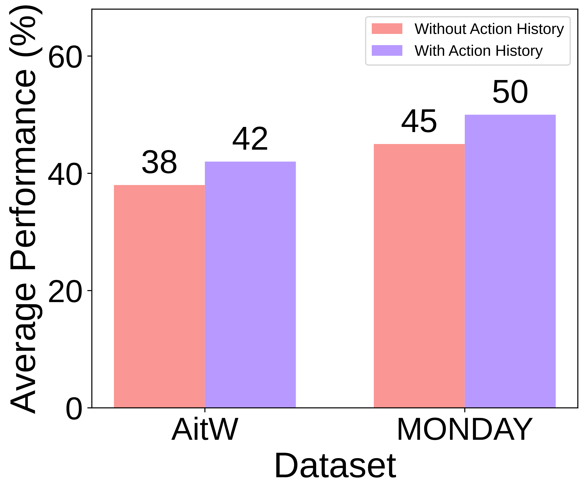
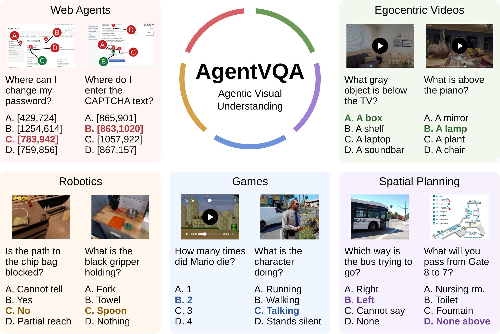
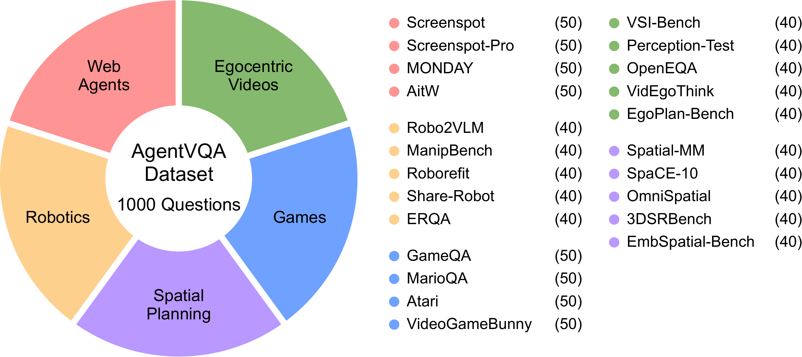
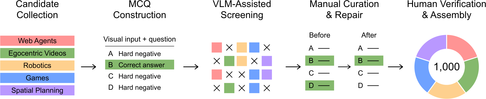
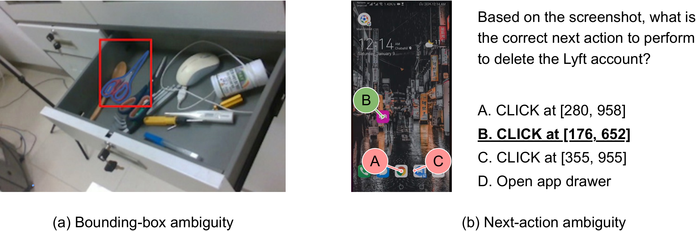
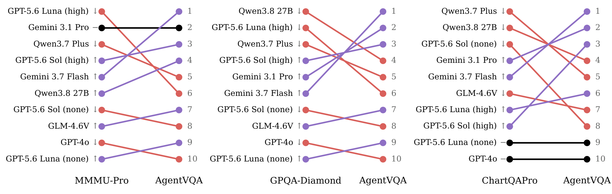
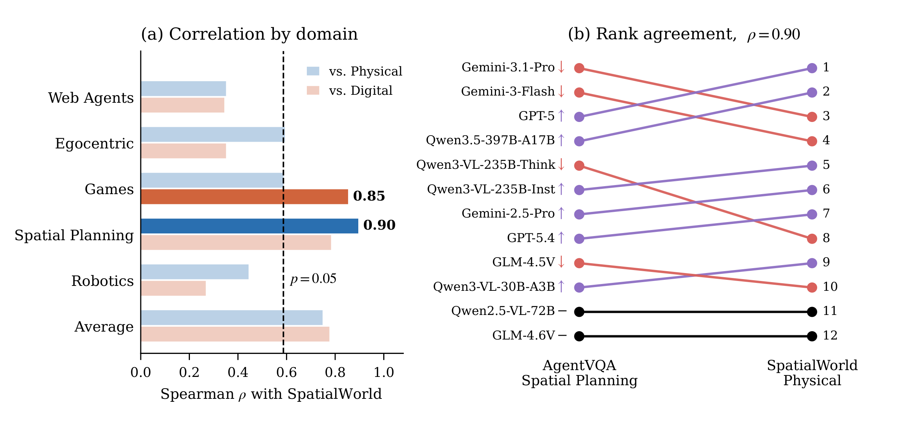
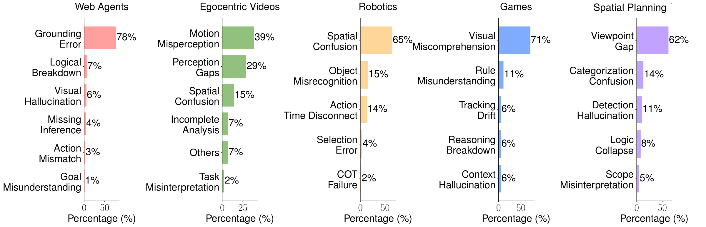

Action history improves web-agent decisions
Across five models, including previous actions improves performance on AitW and MONDAY. The figure shows average accuracy with and without action history.

A Unified Benchmark for
Agentic Visual Understanding
1 University of Maryland, College Park · 2 Princeton University
AgentVQA evaluates the visual understanding needed for goal-directed interaction: locating a button, interpreting an action, tracking a game state, or planning a route. It brings together 23 datasets across Web Agents, Egocentric Videos, Games, Spatial Planning, and Robotics in a common multiple-choice format.
The benchmark contains 1,000 human-verified questions, with 200 per domain. Questions use single images, image sequences, or videos, with episode goals and action histories where available. Across 22 evaluated model configurations, the best overall accuracy is 58.5%, achieved by Gemini 3.7 Flash.


One example from each of the 23 datasets. The correct answer is highlighted; model symbols indicate predictions.
Questions undergo MCQ conversion, VLM screening, and manual checks for correctness, clarity, difficulty, and distractor quality.

The final benchmark retains 22% of initial candidates. Each retained question is verified to have exactly one correct answer.

The best overall accuracy is 58.5%. No single model leads across all five domains.
We compare model rankings on AgentVQA with general reasoning benchmarks and an online agent benchmark.
The paper evaluates matched subsets with standardized prompts. Model rankings shift across MMMU-Pro, GPQA-Diamond, and ChartQA-Pro, with moderate to weak rank correlations.
Spearman’s ρ · 10-model comparison

AgentVQA Spatial Planning and the SpatialWorld Physical track agree strongly across their 12 shared models. This is a separate overlapping-model cohort from the main 22-configuration evaluation.

Across five models, including previous actions improves performance on AitW and MONDAY. The figure shows average accuracy with and without action history.

Extended reasoning improves both GPT-5.6 variants, but GLM-4.1V-9B-Thinking trails its base counterpart. Accuracy alone does not tell the full story of how models use extra computation.
| Model | None / Base | High / Thinking | Δ (pp) |
|---|---|---|---|
| GPT-5.6-sol | 38.2 | 55.0 | +16.8 |
| GPT-5.6-luna | 32.8 | 47.9 | +15.1 |
| GLM-4.1V-9B | 36.3 | 35.4 | −0.9 |
Δ is the difference in percentage points. The paper also documents “thinking loops” in GLM-4.1V-Thinking.
The paper analyzes incorrect Gemini 3.1 Pro predictions sampled approximately evenly across datasets. Error categories are model-assisted and manually verified.
| Domain | Most common error | Share of analyzed errors |
|---|---|---|
| Web Agents | Grounding error | 78% |
| Egocentric Videos | Motion misperception | 39% |
| Robotics | Spatial confusion | 65% |
| Games | Visual miscomprehension | 71% |
| Spatial Planning | Viewpoint gap | 62% |
Percentages are shares of the analyzed errors within each domain—not error rates across all questions.

If you find AgentVQA useful in your research, please consider citing:
@misc{gupta2026agentvqa,
title={AgentVQA: A Unified Benchmark for Agentic Visual Understanding},
author={Gupta, Advait and Konan, Sachin and Yin, Tom and Sarch, Gabriel and Liu, Zhuang},
year={2026},
url={https://openreview.net/pdf?id=MQinK5xoYM}
}